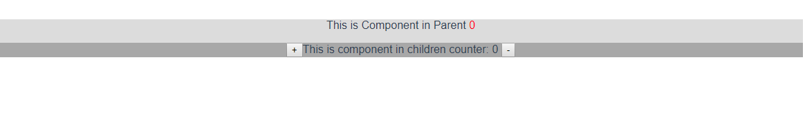
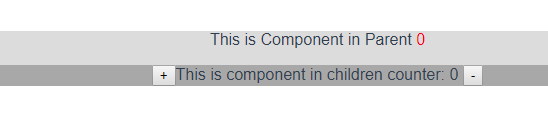
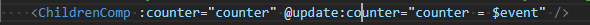

# [Vue] 使用 props.async 同步父子組件之間的傳值
# Two way data flow 是一把雙面刃。雖然方便，但也同時增加了 Code 維護的難度。使用 props.sync 可以提高程式碼的可讀性與可維護性。
Vue 在 2.3 版中迎來了一個更新： 新增了 .sync 修飾符 。這個修飾符儘管只是一個語法糖，但依然使我們在 Vue 父子組件之間的 props 雙向綁定 (Two way binding) 中新增了一個選擇。
過去我們若希望達到父子組件之間的 props 進行雙向綁定必須自行實作兩個步驟：
- 從父組件利用 props 傳值到子組件
- 父組件監聽自訂的 Event
event。當子組件發生變更時，使用$emit('event', value);將變動通知父組件，並於父組件中自行更改值。
我們以實作一個計數器來呈現的話，Code 可能會像如下：
ParentComponent.vue
<script>
import ChildrenComponent from './Children.vue'
export default {
name: 'PropSync',
components: {
ChildrenComponent
},
data() {
return {
counter: 0,
};
},
methods: {
updateCounter(val) {
this.counter = val;
}
}
}
</script>
<template>
<section style="background-color: #DDDDDD">
<p>This is Component in Parent <span style="color: red;">{{ counter }}</span></p>
<!-- 1. Using v-bind:counter to props the `counter` to ChildrenComponent -->
<!-- 2. Using v-on:counter-update to listen the change value and set value to `counter` -->
<children-component :counter="counter" @counter-update="updateCounter"/>
</section>
</template>
ChildrenComponent.vue
<script>
export default {
name: 'PropSyncChildren',
props: {
counter: {
type: Number,
default: 0
}
},
}
</script>
<template>
<div style="background: #AAAAAA">
<!-- on click event is trigger, emit the counter-update to tell the parent `counter` is changed. -->
<button @click="() => this.$emit('counter-update', this.counter + 1)"> + </button>
<span>This is component in children counter: {{ counter }} </span>
<!-- on click event is trigger, emit the counter-update to tell the parent `counter` is changed. -->
<button @click="() => this.$emit('counter-update', this.counter - 1)"> - </button>
</div>
</template>

以上的作法一直以來都是 Vue 解決父子組件對 props 雙向綁定的解決方法。
然而這有著顯著的缺點：我們在父組件中難以一眼看出此 props 是被雙向綁定的。
這大大的增加了維護上的困難。
這也是為什麼官方在 2.3 版新增此功能後，推薦於雙向綁定的狀況中使用 .sync 的原因。
# 改成使用 .sync 修飾符
我們一樣使用上面的 Code，將其修改成使用 .sync 完成雙向綁定。
ParentComponent.vue
<script>
import ChildrenComp from './Children.vue'
export default {
name: 'PropSync',
components: {
ChildrenComp
},
data() {
return {
counter: 0,
};
}
}
</script>
<template>
<section style="background-color: #DDDDDD">
<p>This is Component in Parent <span style="color: red;">{{ counter }}</span></p>
<!-- We use `.sync` decorator to declare the counter is a two way binding props. -->
<ChildrenComp :counter.sync="counter" />
</section>
</template>
ChildrenComponent.vue
<script>
export default {
name: 'PropSyncChildren',
props: {
counter: {
type: Number,
default: 0
}
},
}
</script>
<template>
<div style="background: #AAAAAA">
<!-- We use 'update:"props-name"' to emit a update event, and pass the change value. -->
<button @click="() => this.$emit('update:counter', this.counter + 1)"> + </button>
<span>This is component in children counter: {{ counter }} </span>
<!-- We use 'update:"props-name"' to emit a update event, and pass the change value. -->
<button @click="() => this.$emit('update:counter', this.counter - 1)"> - </button>
</div>
</template>
我們可以看到：
- 在 Parent Component 中，我們捨棄了
v-on:counter-update事件監聽 - 在 Children Component 中，我們改為使用
update:counter作為更新的事件。
我們來看看更改後的結果。

# 原理
講完了 .sync 修飾符的使用方法，我們來說說 為什麼 這只是語法糖。
我想應該已經有人注意到了。事實上，我們剛剛更改的程式碼，本質依然是
- 從父組件利用 props 傳值到子組件
- 父組件監聽自訂的 Event
event。當子組件發生變更時，使用$emit('event', value);將變動通知父組件，並於父組件中自行更改值。
但是差別是，在 Parent Component 中 counter.sync 其實是 v-bind=”counter” v-on:update:counter=”counter = $event” 的縮寫。
意即，真正的 code 其實是長這樣

所以這也就是為什麼 Vue 會說這只是個修飾符的原因。
# 結語
Vue 新增的 .Sync 修飾符，大大的帶來了父子組件中雙向綁定的便利性。
並且藉由在 Props 上使用這個修飾符，我們可以很顯式地了解哪些 Props 是被子組件雙向綁定，哪些是傳到子組件中不會被更改的。
大大提高了程式碼的可讀性與可維護性。